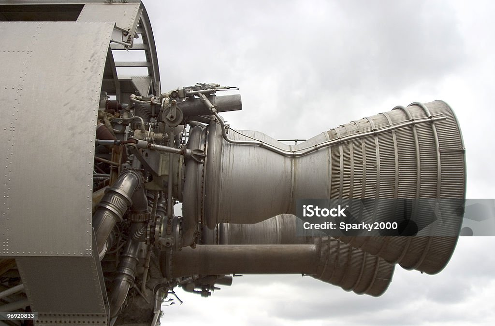

Welcome to the Future of Engineering.
Material Engineering is a branch of science which deals in Engineering use of materials in different applications based on their properties. such as in Aeroapace, Healthcare and Infrastructure.
Applicationsa:
- Aerospace: Lightweight Rockets and space craft
 Energy: Solar Panels, fuel cells and advanced batteries
Energy: Solar Panels, fuel cells and advanced batteries